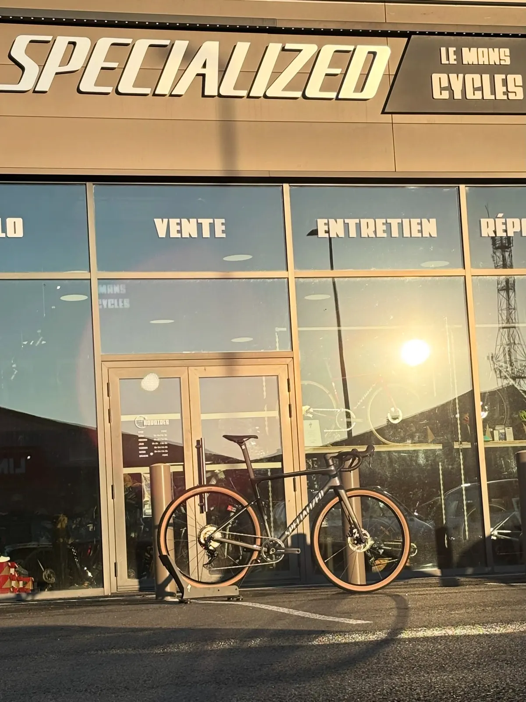
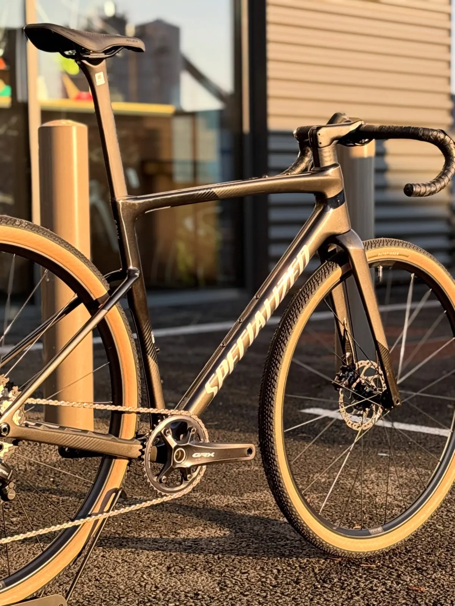
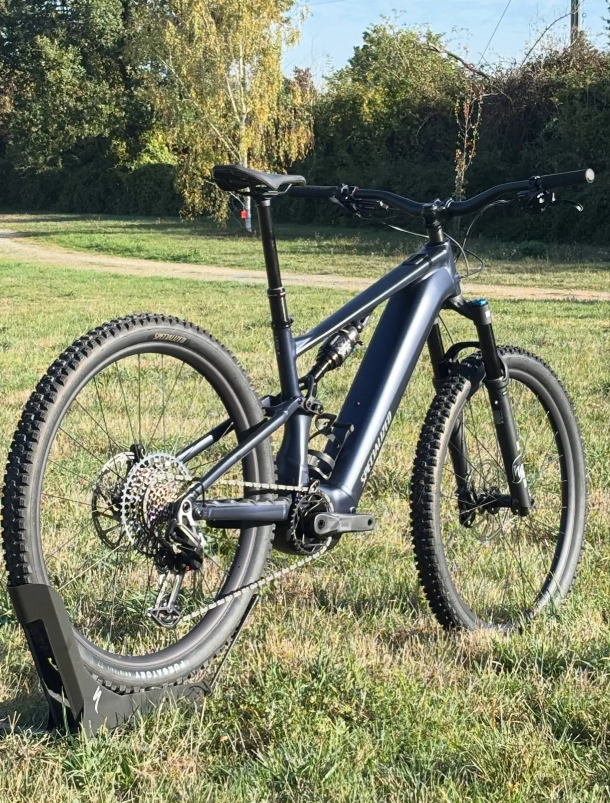
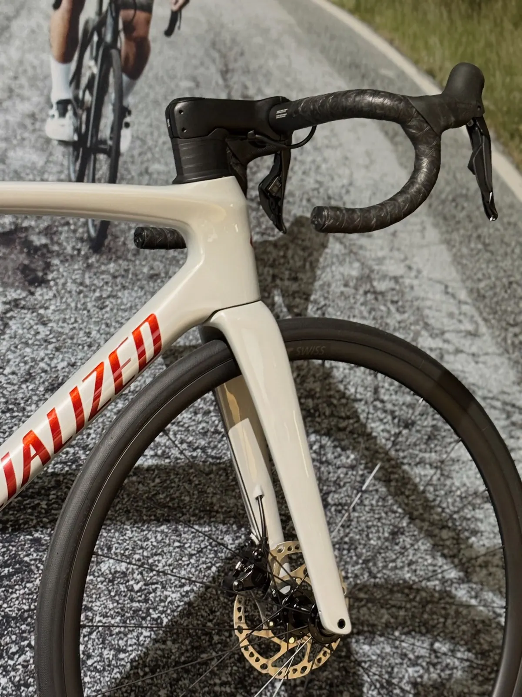
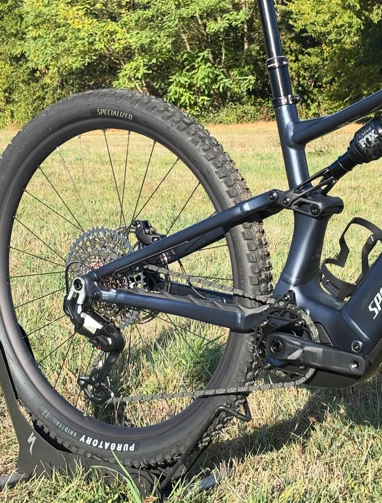
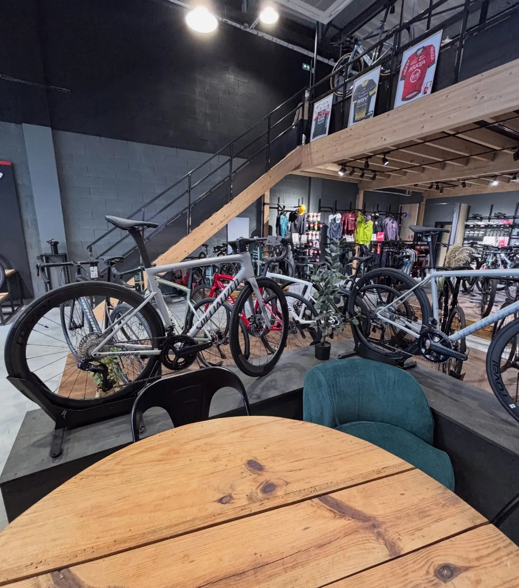

Vélos Specialized et réparation toutes marques, au Mans

Fiche d'atelier 122 rue Albert Einstein
- Vente
- Toute la gamme Specialized
- Réparation
- Toutes marques
- Étude posturale
- Retül fit
Magasin de vélos ville, électrique, route et VTT, accessoires et textile : toute la gamme Specialized, rue Albert Einstein. L'atelier répare toutes les marques, et l'étude posturale Retül fit se fait sur place.
- 4,9 sur 528 avis sur Google
- SpecializedRoute, gravel, VTT, électrique, ville
- Toutes marquesEntretien et réparation à l'atelier
- Mardi au samedi122 rue Albert Einstein, Le Mans

Gravel Specialized, devant le magasinUne gamme pensée pour tous les passionnés
Des vélos pour toutes vos sorties, et une équipe pour trouver celui qui vous correspond. Passez au magasin découvrir la gamme.
- RouteJusqu'au Tarmac S-Works, monté à la carte
- GravelCadre carbone, comme celui exposé devant le magasin
- VTTDont le Turbo Levo R Comp Alloy, à assistance
- Électrique et villeVélos de ville et à assistance électrique
- ÉquipementAccessoires et textile

VTT électrique
RouteVotre vélo n'est pas un Specialized ? Il passe à l'atelier.
Le Mans Cycles est réparateur toutes marques : entretien et réparation, quel que soit le vélo.
- RéparationEntretien et réparation, toutes marques
- Étude posturaleRetül fit, pour régler votre position sur le vélo
- Montage à la carteChoisissez équipement, transmission et roues selon vos envies et votre budget

Transmission et suspension
Le magasin, rue Albert EinsteinLe Mans Cycles, sur sa page
« Une équipe là pour vous conseiller et vous aider à trouver le vélo qui vous correspond. »
Horaires du magasin
- LundiFermé
- Mardi10 h – 13 h, 14 h – 19 h
- Mercredi10 h – 13 h, 14 h – 19 h
- Jeudi10 h – 12 h, 15 h – 19 h
- Vendredi10 h – 13 h, 14 h – 19 h
- Samedi10 h – 13 h, 14 h – 18 h
- DimancheFermé
Le jeudi, l'après-midi commence à 15 h. Les jours fériés, horaires à vérifier sur la fiche Google.
4,9sur 5 sur Google
28 avis
28 avis
Téléphone02 43 42 10 48
Adresse
122 rue Albert Einstein, 72000 Le Mans
E-mailmans.cycles@gmail.com